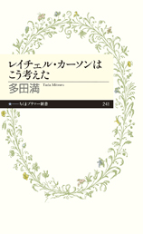
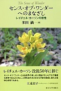
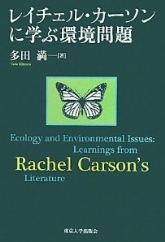

多田 満（ただ みつる）
高松高校 昭和53年卒
(Last updated:2015.10)
プロフィール
1978年(S53) 高松高校卒業
東京大学大学院修了
現在は、国立環境研究所環境リスク研究センター主任研究員(つくば市)、博士(農学)
著書・翻訳

『レイチェル・カーソンはこう考えた』 ちくまプリマー新書（2015年）２０世紀を代表する偉大な知性、レイチェル・カーソン。環境破壊を警告する嚆矢となった『沈黙の春』や自然を尊ぶ心を育む重要性を説く『センス・オブ・ワンダー』など今なお古びることのないその功績を問いなおす。
内容紹介はこちら

『センス・オブ・ワンダーへのまなざし──レイチェル・カーソンの感性』（2014年,東京大学出版会）自然の神秘さや不思議さを感じとろう――「センス・オブ・ワンダー」という感性は，『沈黙の春』をはじめレイチェル・カーソンのすべての作品の根底に静かに流れている。
カーソンの没後50年，「環境の世紀」といわれる現代によみがえる自然とともに生きるためのメッセージ。
内容紹介はこちら

『レイチェル・カーソンに学ぶ環境問題』（2011年,東京大学出版会）『沈黙の春』から５０年――レイチェル・カーソンの作品をあらためて読み解き，そこに描かれていた生態系，生物多様性，自然との共生など，現代の環境問題を考えるうえで重要なテーマを生態学の視点から問いなおす。
内容紹介はこちら
『環境毒性学』（渡邉泉・久野勝治編,分担執筆,2011年,朝倉書店）
『レイチェル・カーソン』（上岡克己・原 強・上遠恵子編,分担執筆,2007年,ミネルヴァ書房）
『陸水の事典』（日本陸水学会編,分担執筆,2006年,講談社）
『生態影響試験ハンドブック――化学物質の環境リスク評価』 （日本環境毒性学会編,分担執筆,2003年,朝倉書店）
『たのしく読めるネイチャーライティング』（文学・環境学会編,分担執筆,2000年,ミネルヴァ書房）
コンピューターアート
環境や生物をテーマに複雑系の考え方をアートに取り入れ、コンピューターアートやミクストメディアによる制作をおこない、パリをはじめ東京、ウィーン、バルセロナ、フランクフルト、ニューヨークなどで開催の現代美術や版画の展覧会に多数出品。
第2回日仏現代作家展 佳作賞（東京・パリ、1999）、第5回ART公募2001 画廊企画賞（東京、2001）、NY Coo Gallery 公募展 NY Coo賞（自由題材部門最優秀）賞（ニューヨーク、2007）、ル・サロン 銅メダル賞（パリ、2009）。